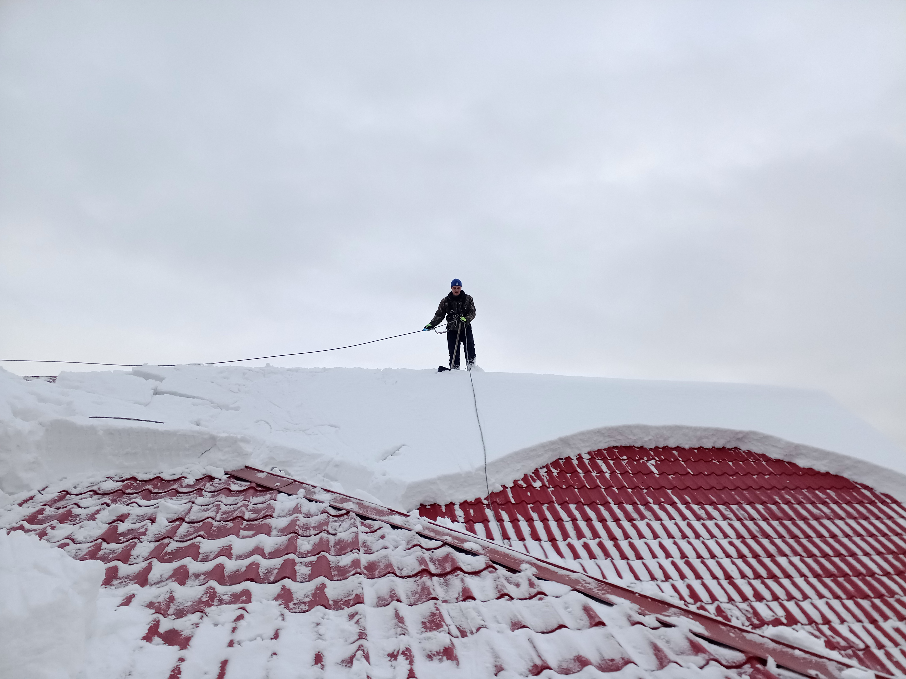
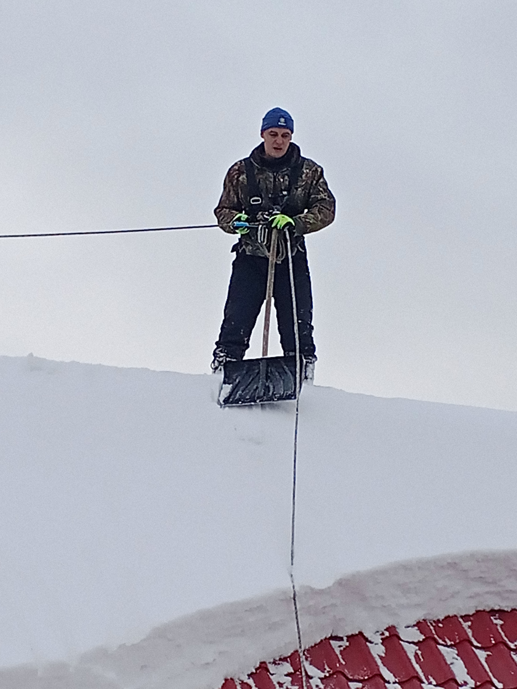

Снегоудержатели
Монтаж на любую кровлю: металлочерепица, профнастил, фальц, мягкая кровля. От 500 ₽/м.п.
- Крепление штатным крепежом
- Работаю 8:00 – 21:00, без выходных
- Договор, безнал, ЭДО

Виды работ
Замер и подбор
Оценю кровлю, снеговую нагрузку, шаг. Подберу тип.
Монтаж
К обрешётке штатным крепежом, швы герметизирую.
Поставка материала
Привезу сам или смонтирую ваш.
Осмотр готовых
Проверка и добор на уже готовой крыше.
С автовышки
Для высоких зданий и сложной кровли.
Гарантия
Срок и условия — в договоре.
От чего зависит цена
Считаю за погонный метр.
- Длина карниза, число рядов
- Тип кровли
- Тип снегоудержателя
- Высота и доступ
- Комплектующие: свои или заказчика
| Монтаж, пог. м | от 500 ₽ |
|---|---|
| Выезд на замер | Серов — входит |
| Точный расчёт | по фото или замеру |
Работы





Пришлите фото кровли
Фото крыши и размер карниза. Если не беру трубку — на объекте, перезвоню.
Вопросы
Сколько стоит монтаж?
От 500 ₽ за погонный метр. Точно — по фото.
Какие лучше?
Трубчатые — для любой кровли, держат большой снег. Решётчатые — на коттеджах. Уголковые — для профнастила и металлочерепицы.
Не повредит кровлю?
Креплю к обрешётке штатными кронштейнами, места крепления герметизирую. Течей не будет.
На готовую крышу?
Да. Крепёж подберу под каждый тип кровли.
Материал привезёте?
Привезу сам или смонтирую ваш.